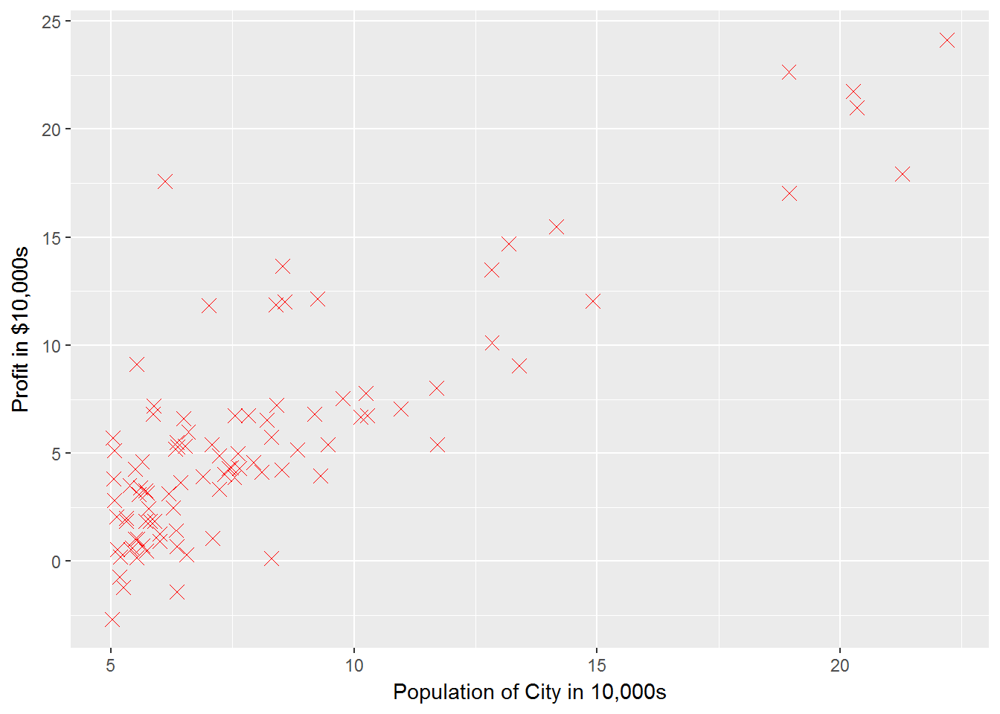
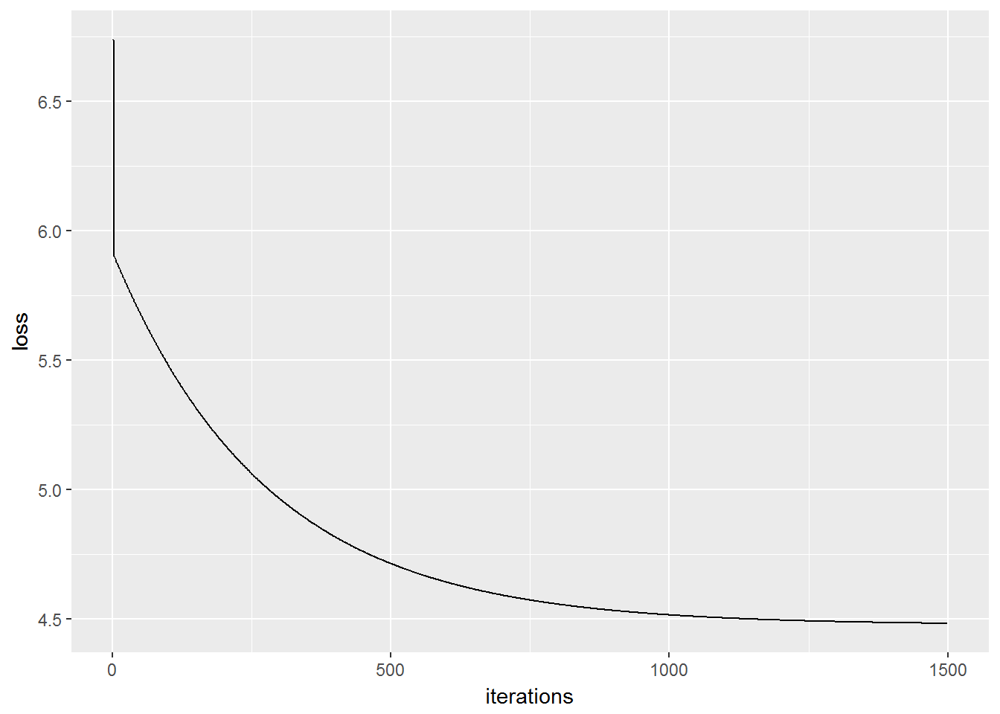
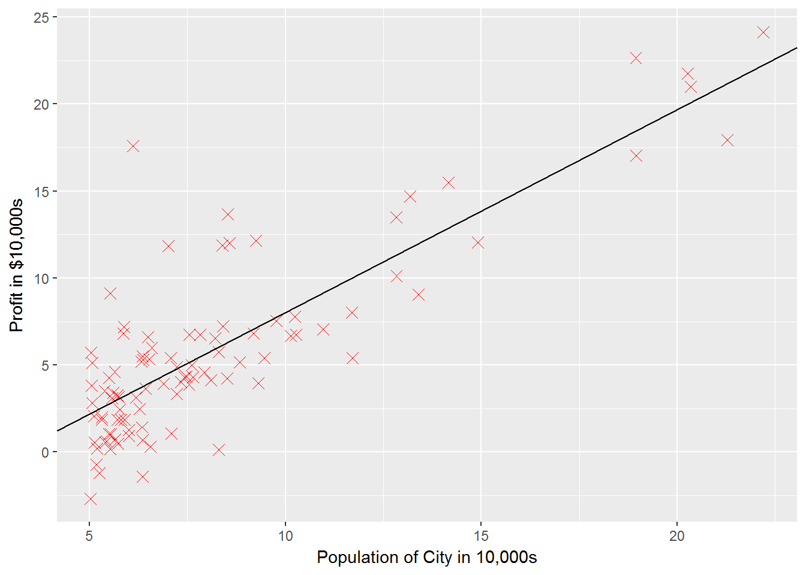

require(ggplot2)
require(dplyr)
require(knitr)I’ll skip over this since I figure anyone wanting to follow along is already familiar with R
You won’t be able to submit this for credit, but hopefully you still find this useful
Here I read in the data, split it into X and y, and generate starting values for theta
q1data <- read.table("data/ex1data1.txt",
sep = ",",
col.names = c("population", "profit"))
q1data$ones <- 1
q1data <- q1data %>% select(ones, population, profit)
X <- select(q1data, -profit)
y <- q1data$profit
theta <- rep(0, times = 2)g1 <- ggplot(q1data, aes(x = population, y = profit)) +
geom_point(shape = 4, color = "red", size = 3) +
xlab("Population of City in 10,000s") +
ylab("Profit in $10,000s")
g1
iterations <- 1500
alpha <- 0.01Functions are defined in a separate script so they can be accessed for other assignments. See ?knitr::read_chunk
read_chunk("ex1/ex1_chunks.R")computeCost <- function(X, y, theta, lambda = 0){
if(is.null(dim(X))){
X <- t(data.frame(X))
}
m <- nrow(X)
pred <- theta %*% t(X)
sqError <- (pred - y) ^ 2
cost <- (1 / (2 * m)) * sum(sqError)
reg <- (lambda / (2 * m)) * sum(theta[-1]^2)
J <- cost + reg
gradient <- (1 / m) * sum((pred - y) * X[, 1]) # first element unregularized
for(j in 2:length(theta)){
gradient <- c(gradient, ((1 / m) * sum((pred - y) * X[, j]) + lambda * theta[j] / m))
}
return(list(J=J, gradient=gradient))
}gradStep <- function(thetaj, alpha, gradj){
thetaj - alpha * gradj
}Note that in the loop, thetas get stored in a temporary variable for simultaneous updating.
gradientDescent <- function(X, y, theta, alpha, iterations, lambda = 0){
if(length(theta) != ncol(X)){stop("theta and X are nonconformable")}
J_history <- data.frame()
for (iteration in 1:iterations){
a <- computeCost(X = X, y = y, theta = theta, lambda = lambda)
J <- a$J
gradient <- a$gradient
J_history <- rbind(J_history, c(J, iteration - 1, theta))
thetaTemp <- vector()
for(j in 1:length(theta)){
thetaTemp <- c(thetaTemp, gradStep(theta[j], alpha, gradient[j]))
}
theta <- thetaTemp
}
# for final iteration
J <- computeCost(X = X, y = y, theta = theta, lambda = lambda)$J
J_history <- rbind(J_history, c(J, iteration, theta))
thetanames <- rep("theta", times = length(theta) - 1)
for(i in length(thetanames)){thetanames[i] <- paste("theta", i, sep = "")}
colnames(J_history) <- c("loss", "iterations", "theta0", thetanames)
return(J_history)
}computeCost(X, y, theta)## $J
## [1] 32.07273
##
## $gradient
## [1] -5.839135 -65.328850Should be 32.07
Pay particular attention to indexing in these exercizes, because unlike Matlab, R does start indexing at 1
jhist <- gradientDescent(X, y, theta, alpha, iterations)
jhist <- jhist[2:(nrow(jhist) - 1),] #makes graph more interpretible ggplot(jhist, aes(x = iterations, y = loss)) + geom_line()
g1 + geom_abline(slope = tail(jhist$theta1, n = 1), intercept = tail(jhist$theta0, n = 1))
I skipped over this section since the code is already written in Matlab by the course instructors. See the assignment page for the images that show how different values of the thetas yield different costs
These are still incomplete. I’m planning on returning to these after making it through the main course content